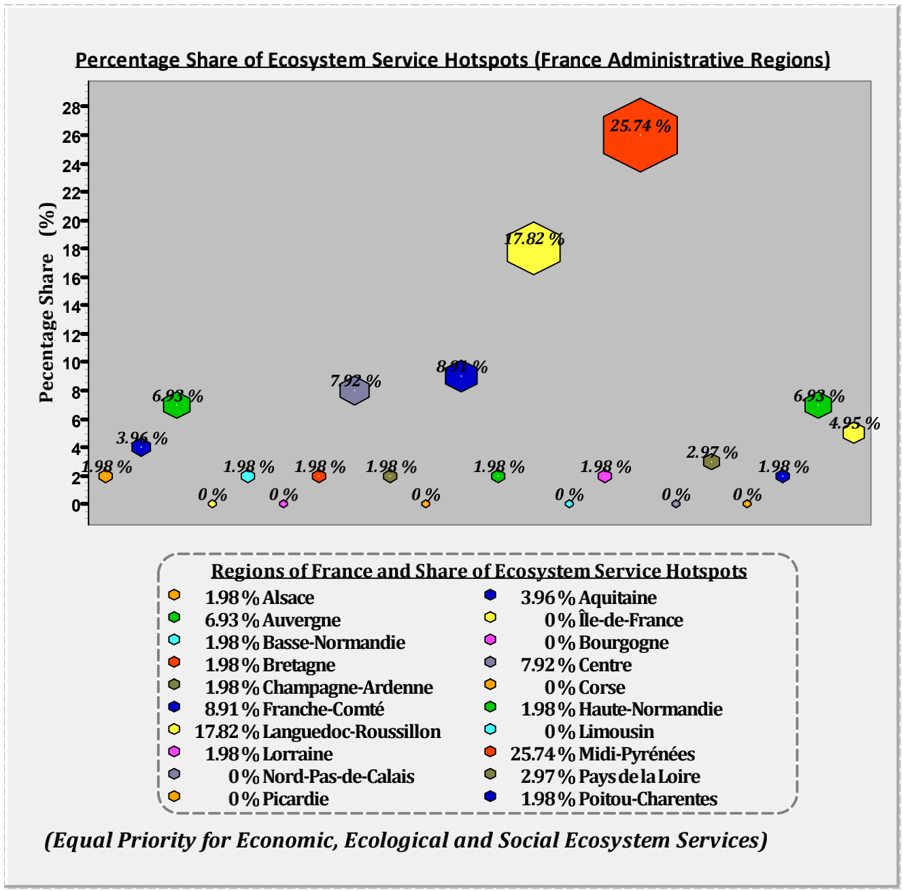

Multidimensional Assessment of Ecosystem Services: Using Geographic Information System (GIS) and Multi-Criteria Decision Aid (MCDA) for ecosystem service assessment in France
Abstract
The development and exploitation of ecosystem services such as food, timber, genetic resources, nutrient cycling, water regulation, ecotourism and recreation among others have largely occurred as social interaction with ecosystems; for which its consequence have been assessed. In fact, 60% of global ecosystem services have degraded with scientific consensus noted among several researches including the Millennium Ecosystem Assessment and Intergovernmental Science-Policy Platform on Biodiversity and Ecosystem Services. Yet to be adequately understood are the questions of “how much ecosystem service hotspots are left?” and “where are they located for proper management and planning?” This among other enquiry ignited the research interest of this thesis; which is also given impetus by the need to resolve numerous methodological flaws in existing researches such as the limitations in the use of Costanza co-efficient and the need to compile and synchronize existing conceptual frameworks with relevant decision aid tools such as the sustainability framework.
Informed by this, this thesis seeks to undertake multidimensional assessment of ecosystem services with Multicriteria Decision Aid to identify distribution of ecosystem service hotspots among others under various scenarios of prioritization in a spatially explicit manner. To achieve this, the distribution of ecosystem services were mapped, hypothesis of spatial clustering of ecosystem services was tested, the relationship between various ecosystem services was investigated, ecosystem service hotspots under various prioritization was assessed and their percentage share in various regions also analyzed to offer an ecosystem service perspective in regional planning. The task was addressed by reviewing major ecosystem service conceptual frameworks to explore their utility and resolve their weakness for the benefit of this thesis. Moreover, all ecosystem services identified were compiled, selection of indicators was structured and based on the criteria of ability to communicate information to policy makers and availability of spatial datasets.
To operationalize and contextualize the assessment, Metropolitan France was used as an analytical unit base on explicit call for ecosystem service perspective for regional development planning and management in the country. ArcGIS, Quantum GIS (GIS), matplotlib (python library) and PowerBI were employed as tools for analysis and data visualization. The analysis undertaken involved various preprocessing techniques, aggregation of criteria maps, spatial autocorrelation (Global Moran`s I), hotspot analysis, weighted sum overlay and zonal statistics.
Deduced from the assessment, ecosystem services are spatially clustered hence an evidence to underscore the importance of regional analysis and planning of ecosystem services is provided in this research. Economic and ecological ecosystem services were assessed to be positively related hence a synergy is realized. Opposed to this, is a negative relationship between social ecosystem services and all other ecosystem services hence a trade-off. The novelty of this research lies in its ability to capture various scenarios of prioritizing different ecosystem services while capturing the resulting variations in the distribution of ecosystem service hotspots. For this, prioritization of economic ecosystem services produces the largest distribution of ecosystem service hotspots covering 6.43% of France landscape hence the best bet to be explored among other potential policy pathways. As a caution, prioritization of social ecosystem services will produce the least distribution of ecosystem service hotspots covering 3.13% of France landscape. While this research provided numerous insights in the field of ecosystem service assessment, it remains acquiescent and inspirational for other researches in the field hence not reaching a dead end. Thus, this thesis subject itself to other MCDA techniques as an object of further enquiry and spatio-temporal assessment of ecosystem service hotspots will be an added value.
Snapshoot of methodology
Tools used
- ArcGIS
- QGIS
- Python
- Power BI
Analysis
Indicators used
Results
Research Objective 1: To undertake spatial mapping and assessment of ecosystem services
Mapping of economic ecosystem services (10 indicators used)

Mapping of ecological ecosystem services

Mapping of social ecosystem services

Research Objective 2: To test the hypothesis that ecosystem services are randomly distributed
Spatial autocorrelation of Economic Ecosystem Services (Global Moran's I)

Spatial autocorrelation of Ecological Ecosystem Services (Global Moran's I)

Spatial autocorrelation of Social Ecosystem Services (Global Moran's I)

Research Objective 3: To analyze the relationship between various dimension of ecosystem services

Research Objective 4: To undertake hotspot analysis of ecosystem services
Hotspot analysis for equal prioritization of ecosystem services

Hotspot analysis for prioritization of economic ecosystem services

Hotspot analysis for prioritization of ecological ecosystem services

Hotspot analysis for prioritization of social ecosystem services

Research Objective 5: To analyze how trade-offs in prioritizing various dimensions of ecosystem services influence the distribution of ecosystem services hotspots
Hotspot analysis for equal prioritization of ecosystem services

Graph of regional share of equally weighted ecosystem services
Hotspot analysis for prioritization of economic ecosystem services

Graph of regional share of economic weighted ecosystem services

Hotspot analysis for prioritization of ecological ecosystem services

Graph of regional share of ecological weighted ecosystem services

Hotspot analysis for prioritization of social ecosystem services

Graph of regional share of social weighted ecosystem services